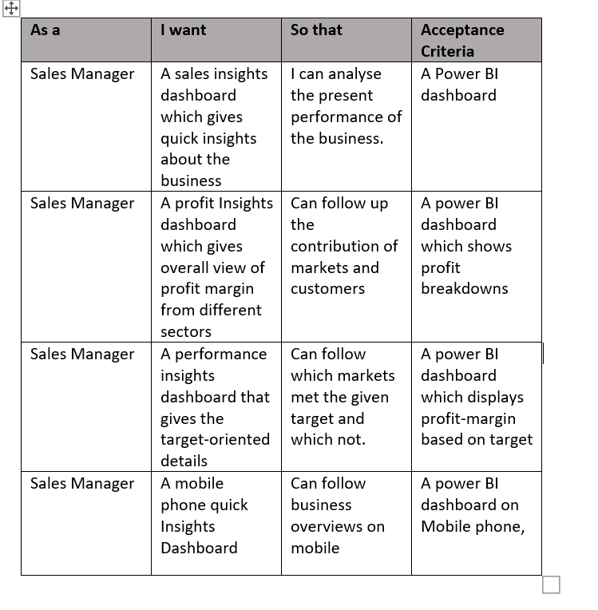
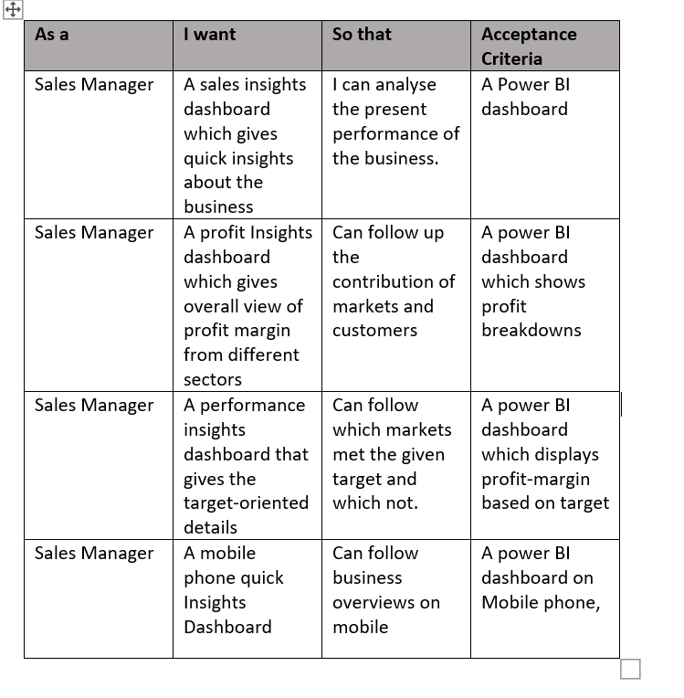
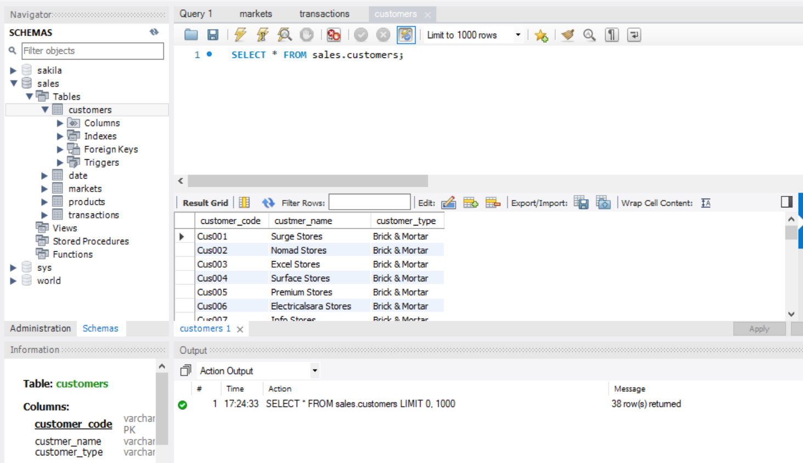
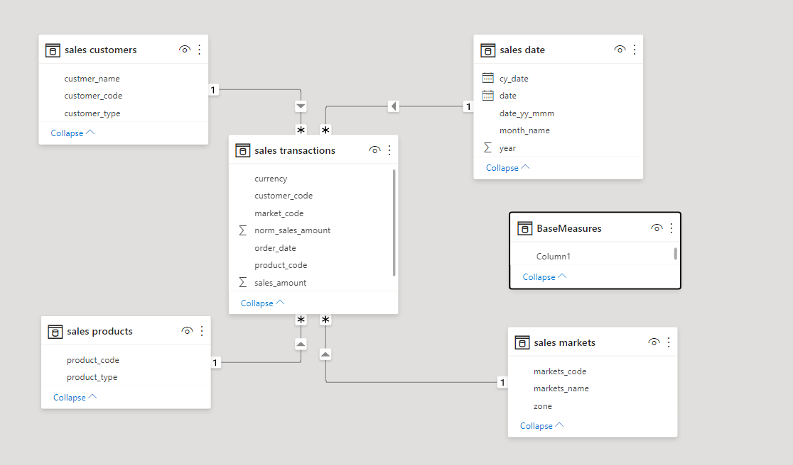
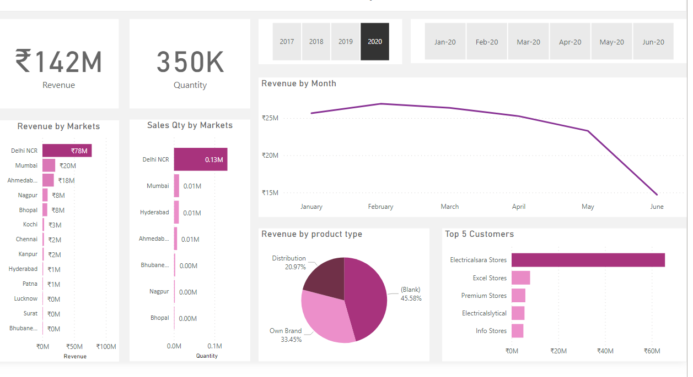

1)Business Request & User Stories

The business request for this project was created by myself. By deciding on a business to analyze,the user story is derived

The business request for this project was created by myself. By deciding on a business to analyze,the user story is derived

To create the necessary data model for doing analysis and fulfilling the business needs defined in the user stories the table is directly connected from SQL server.

Below is a screenshot of the data model after cleansed and prepared tables were read into Power BI. This data model also shows how FACT_Budget hsa been connected to FACT_InternetSales and other necessary DIM tables.

The finished sales Insight dashboard with one page with works as a dashboard and overview, with two other pages focused on profit and perfomance.